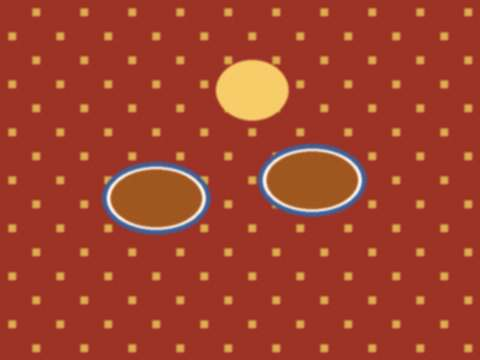
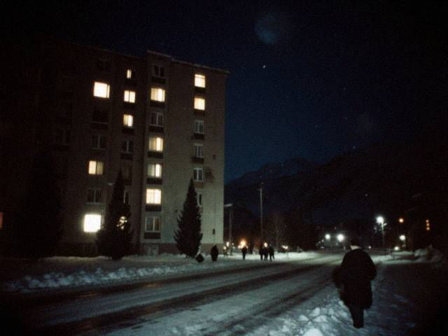
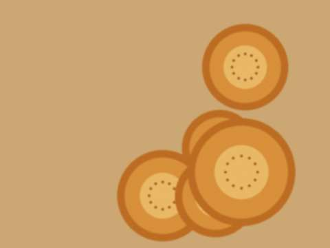
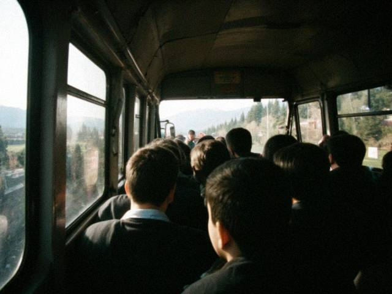

Apr22013
Tuesday, April 2nd, 2013 at 10:12 pm by bekzhan
Nobody writes blogs any more, everybody is on Odnoklassniki and Facebook. Meerim stopped writing, Aibek never wrote. I look at this blog and I see the 2005 me, very funny, very serious.
I will leave it here. Maybe in ten years I will read it to my son. (Yes, we will have a son in July, inshallah.)
Thank you, 12 readers.
Posted in Life | 3 Comments »
Dec22012
Sunday, December 2nd, 2012 at 9:20 pm by bekzhan
Things that are different:
- There are two toothbrushes in the glass. This is not a metaphor.
- The flat smells of her tea (jasmine) and my solder (flux).
- I now know what time it is, because someone tells me.
- My grandmother calls every evening "to ask about the weather".
Things that are not different: the ATM at the station still has bad luck. It rings at three.
Posted in Life | No Comments »
Sep162012
Sunday, September 16th, 2012 at 2:00 pm by bekzhan
A short post: on Saturday I got married. Her name is Aizhan, she works at the Talasbank branch on Ayyubov street (that is how I met her: her ATM was broken). The toi was at the Altyn Ordo toikana, 300 people, my mother is very tired and very happy.
Posted in Life | 1 Comment »
Mar182012
Sunday, March 18th, 2012 at 10:30 pm by bekzhan
This is the story of how I met someone. I will tell it in the third person, because I am shy.
A man who fixes ATMs got a call: the machine at the Ayyubov street branch has a card jam. He came. A young woman from the bank was standing next to the machine, with her arms crossed, looking at it as if it had insulted her mother. He opened the machine. He took out a card. It was hers. She said: "Thank you." He said: "It was in the slot." She said: "I know where it was."
Reader, we have since had four more incidents on that machine. All deliberate.
Posted in Life | 2 Comments »
Aug212011
Sunday, August 21st, 2011 at 10:15 pm by bekzhan
I was at Meerim's toi yesterday: Talgat invited me (Talgat came from Almaty with two suitcases of presents). The toikana is on the river, 400 guests, a hundred tables, a tamada who could make a stone laugh. The sep was shown, the kuda was done, the groom looked as if he had been carried there in a box.
 outside the toikana, by the river, before the guests came. After that I only saw plov.
outside the toikana, by the river, before the guests came. After that I only saw plov.Meerim wore red and white and cried in the first minute. Her friend Aika sat next to her all evening and did not stop crying either. I ate three plates of plov. The plov was stirred properly, Chu rice, the way it should be, and I forgave the music.
Posted in Life | 3 Comments »
Mar212009
Saturday, March 21st, 2009 at 6:00 pm by bekzhan
Today is Nooruz. My mother cooked all night, and the neighbours came with bowls and went away with bowls, nothing is ever the same bowl. It was cold outside but the sun was warm, and after the winter that feels like a gift.

the table. This is a tenth of what there was.Grandmother said: "This year the spring is a promise." I wrote it on my hand so I would not forget it.
Posted in Life | No Comments »
Feb152009
Sunday, February 15th, 2009 at 7:50 pm by bekzhan
Last night the lights came on at 6 and did not go off until 11. All the neighbours stood outside and looked at the windows. Someone clapped. I think someone also sang.

the street at 6:05 p.m. on Saturday. Every window.We charged everything. We cooked on the electric ring. My sister washed her hair and stood in front of the heater for two hours with her mouth open. Do not tell her I wrote this.
Posted in Life | 1 Comment »
Jan202009
Tuesday, January 20th, 2009 at 9:15 pm by bekzhan
The power at home is on two hours in the morning and two in the evening. Our flat is +9. We sleep in coats, my grandmother says it is like 1992.
I am writing this from the university, where the computer centre is on the generator until 21:00. Many students come here only to be warm. They say on the news there was shooting on the dam road yesterday. I don't know what is true.
Everybody: check on your old neighbours. On the news they said an old teacher died alone in her flat.
Posted in Life | 2 Comments »
Dec132008
Saturday, December 13th, 2008 at 9:40 pm by bekzhan
At the university we hear things. The lecturer in hydrology says the water in the Toktogul reservoir is lower than it has been for many years and "we should expect rationing". She has made a graph, a good one, and showed it twice.
My mother is buying candles. My father brought home a second blanket. My grandmother says: "I know this, I remember this" and sits by the stove like a general.
Posted in Life | No Comments »
Oct192008
Sunday, October 19th, 2008 at 8:45 pm by bekzhan
Talgat has moved to Almaty for a job (he sells equipment for a firm that has an office on the 7th floor, he says "a real floor"). He called me yesterday. His news: it rains in Almaty. My news: it rains here too.
He also sent me a parcel. Inside, in a newspaper from Almaty, was the tüntolk cassette he owed me since 2005. Three years! It has a note: "Sorry. It was in my other jacket."
Posted in Life | 2 Comments »
Mar192008
Wednesday, March 19th, 2008 at 9:44 pm by bekzhan
Since Monday the dollar is 8.40 som, not 5. I was saving for a laptop (the Acer at the Altyn shop, 640 dollars). Before Monday that was 3,200 som. Now it is 5,376 som. My stipend is the same.
OK. It will be a desktop then. Again.
Posted in Life | 2 Comments »
Nov32007
Saturday, November 3rd, 2007 at 10:10 pm by bekzhan
My father brought coal. In the old days, he says, you bought coal in the spring, because it is cheaper, "like a sensible person". This year nobody was sensible.
The stove is working, the cat from next door has moved into our shed, and my mother says that for the first time in a year the house smells of normal things: soup, wet wool, tea.
Posted in Life | No Comments »
Aug192007
Sunday, August 19th, 2007 at 9:35 pm by bekzhan
This week I made a list of people I haven't heard from since the spring: eleven names. I wrote to everyone I had an address for, I asked Aibek's cousin to send a letter by hand, I left a message at my group's old chat room.
Eight have answered. Three have not yet. I keep the list in my pocket and read it before sleeping, like a prayer, but shorter.
Posted in Life | 2 Comments »
Jul52007
Thursday, July 5th, 2007 at 8:00 pm by bekzhan
The baker on our street opened again. People stood in the line at six in the morning and nobody pushed. A loaf is 4 som now, double, and nobody argued.

the first nan from Bakhtiyar-aga's oven, still too hot to hold.I ate it standing on the street. It was the best bread of my life. Also the only bread of my week.
Posted in Life | 1 Comment »
Jun122007
Tuesday, June 12th, 2007 at 8:15 pm by bekzhan
Still here. Everyone in my family is alive. Our street is fine, the windows of the school on the corner are broken. I don't want to write more.
Thank you to everyone who wrote comments and e-mails, from Almaty, Bishkek, Moscow, Chicago. I did not know so many people read this.
Posted in Life | No Comments »
May92007
Wednesday, May 9th, 2007 at 7:10 pm by bekzhan
Electricity from 19:00 to 22:00. When it comes on the whole street makes noise at once: washing machines, the television, someone's hammer. My mother says the street is like an animal waking up.
Our neighbour has a generator and he lets everyone charge their phones for free. He has a notebook in which he writes the names, "so I know who owes me a favour". Of course we are in the notebook.
Posted in Life | No Comments »
Apr252007
Wednesday, April 25th, 2007 at 1:02 pm by bekzhan
Short post for everyone who wrote to me. We are OK. University is closed. We are at home, my grandmother is with us now. There is electricity in the evening, and Attelkom works (slowly). We have flour and potatoes.
Please don't call the home phone, it is always busy. Write here or ICQ.
Posted in Life | 3 Comments »
Mar32007
Saturday, March 3rd, 2007 at 6:20 pm by bekzhan
A week has passed. The shops are open, the marshrutkas run. Everyone speaks a little more quietly than before. At the bus stop two old women discussed the price of eggs for ten minutes in the voice people use in a library.
I went to the university to hand in my Pascal notes. The doorman nodded. That's all I have to say. The weather is cold.
Posted in Life | No Comments »
Feb272007
Tuesday, February 27th, 2007 at 12:20 am by bekzhan
Everybody at the university reads the Irad Times today. People who never bought a newspaper. Half the lectures were empty. I will not write about it here (my mother reads this blog, hello mama), but I just want to say I hope everybody stays calm.
Exams for winter session are postponed. That is the only good news.
Posted in Life | 1 Comment »
Dec312006
Sunday, December 31st, 2006 at 11:15 pm by bekzhan
It was a year with a hole in the middle: in December the Americans left, and the country (the new country?) is learning to say its own name. At the table tonight nobody talked about it. My grandmother made her usual toast: "that everyone at this table is here next year too."
My three wishes for 2007: a laptop, a job at a place with air conditioning, and quiet. I will take any two.
Posted in Life | 1 Comment »
Dec42006
Monday, December 4th, 2006 at 10:10 pm by bekzhan
I said I will not write about politics, so this is not politics. Yesterday the Americans finished their withdrawal. On TV they showed the flag at the old High Commissioner's office. My uncle works at the base as a cook and they told him the base stays and his job stays, so in our family nobody knows what to think.
Father says: "In 1992 nothing changed for one month, and then everything changed." Mother says go to sleep. I go to sleep.
Posted in Life | No Comments »
Mar112006
Saturday, March 11th, 2006 at 8:00 pm by bekzhan
Fourteen years of the republic. All day on TV: the old film about the Winter Uprising, the speeches, the Thousand Saddles with the old men on horses. My grandmother cried at the horses. She cries at the horses every year.
In the evening there were fireworks over the river and the whole street went on the roofs. Someone's uncle played the komuz. I had tea with the neighbours, a sweet roll in each hand. A good day.
Posted in Life | 1 Comment »
Feb192006
Sunday, February 19th, 2006 at 7:40 pm by bekzhan
Minus 22 in the morning. The window in my room has ice on the inside, like a forest. My mother makes soup every day, my father repairs the stove, my sister complains that her phone battery dies in the cold.
 our street on Sunday morning. The neighbour's dog is also in the photo, he is very serious.
our street on Sunday morning. The neighbour's dog is also in the photo, he is very serious.Good news: when it is very cold the university lab is the warmest place in the city. The Pentium IIs make heat. I do my homework there until the guard says "go home, young man".
Posted in Life | No Comments »
Nov152005
Tuesday, November 15th, 2005 at 11:10 pm by bekzhan
Today Kündölük is one year old. I am here only for three and a half months, so I am a young blogger. On the service page they write that there are now many thousands of blogs, and that "people write much more about their cats than we expected."
My plan for this blog until next year: more computers, less cat. (I have no cat.)
Posted in Life | No Comments »
Sep202005
Tuesday, September 20th, 2005 at 6:30 pm by bekzhan
My road to the university is two marshrutkas and one walk. The first one I take at the corner (number 14, very old Russian minibus, the door is tied with a belt). One ride is 1 som, and the driver counts coins with his eyes closed.

the 14 at 7:40 in the morning. Yes, it is full. Yes, I am standing on one leg.The best thing is the radio in the marshrutka: it only has two stations and the driver changes them at every red light. The worst is exam week, when 30 students are in a bus for 18.
Posted in Life | 2 Comments »
Aug212005
Sunday, August 21st, 2005 at 8:15 pm by bekzhan
A list, in the order my mother said them in the kitchen:
- a good bag (not that bag)
- a thick notebook for every subject, "so you don't mix up the integrals with the Pascal"
- shoes for winter, because the main building is far from the bus stop and I will walk, "like a sensible person"
- a flash drive? No. She said "a little thing for the computer". Same thing.
She also said I should buy "a wife, a bit later". I am 17. We negotiated: notebooks first.
Posted in Life | 2 Comments »
Jul282005
Thursday, July 28th, 2005 at 10:41 pm by bekzhan
This is my first post. Attelkom opened blogs (they call it "Kündölük", like the school diary where the teacher writes your marks, ha) and my cousin said everyone in Almaty has a blog already, so here I am.
Big news first: I passed the Uluttuk Synak! We are the first year who wrote it, nobody knew what it would be like. Three hours, maths, Iradi, English, history. I got 83 in maths. My mother cried. In September I start at TSU, mathematics and computer science.
OK, it is 23:00 and the night tariff starts, so I will go read some forums. Bye!
Posted in Life | 2 Comments »